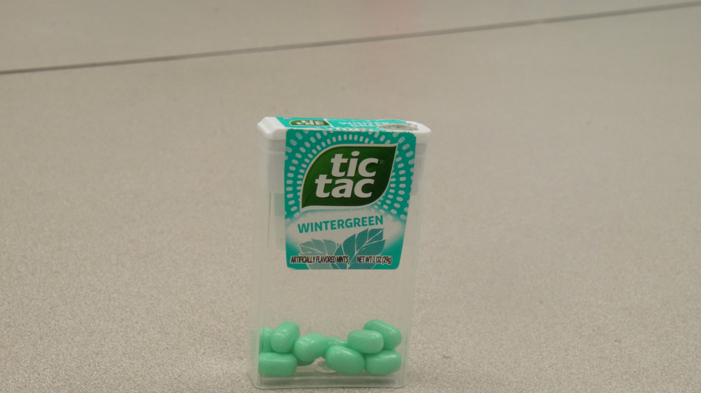
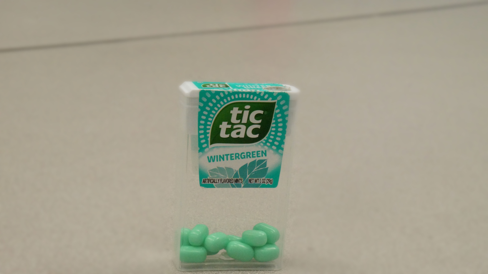
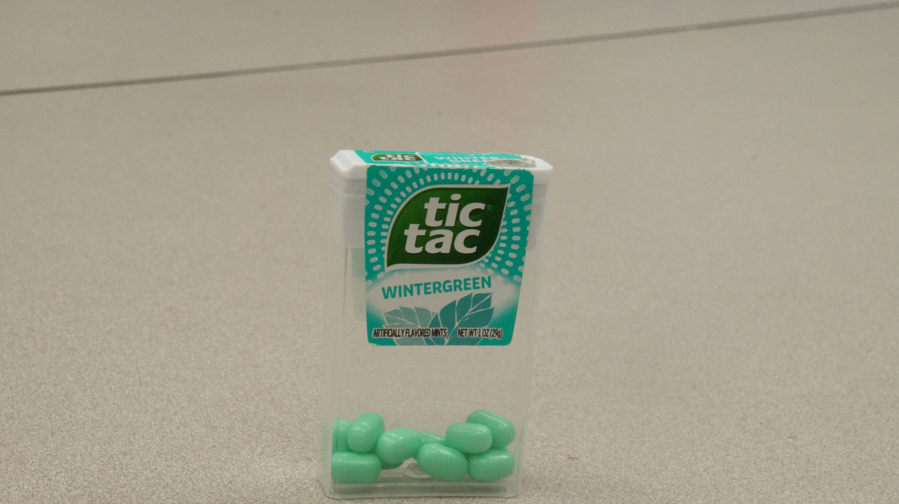

Lower f-stop setting. The subject is sharp while the background appears softer, helping isolate the Tic Tac container.

Higher f-stop setting. Both the subject and background appear more evenly sharp, showing more environmental detail.
For this assignment, I explored shallow and deep depth of field using a Tic Tac container as my subject. I photographed the object from slightly different angles and experimented with how focus affects the way we see the subject. I also created an artificial shallow depth of field using Photoshop’s Gaussian Blur and masking tools.
| Shallow Depth of Field | Deep Depth of Field |
|---|---|
|
Lower f-stop setting. The subject is sharp while the background appears softer, helping isolate the Tic Tac container. |
 Higher f-stop setting. Both the subject and background appear more evenly sharp, showing more environmental detail. |
| Photoshop Blur | Original Image |
|---|---|
|
 I used Gaussian Blur and a layer mask to blur only the background, simulating a shallow depth of field digitally. |
 This is the original image before applying blur adjustments. |
For this assignment, I learned how depth of field changes the way we experience an image. In the shallow depth of field photo, the Tic Tac container stands out more because the background is less distracting. It feels more focused and intentional. In the deep depth of field image, everything appears sharp, which makes the setting more visible and gives more context. I noticed that even small changes in focus make a big difference in how the viewer’s eye moves through the image.
In Photoshop, I created an artificial shallow depth of field using Gaussian Blur and a layer mask. At first, it blurred everything, including the subject, so I had to use a mask to paint back the sharpness on the Tic Tac container. This helped me understand how non-destructive editing works. Overall, this assignment made me more aware of how aperture, focus, and digital tools can shape the mood and clarity of a photograph.